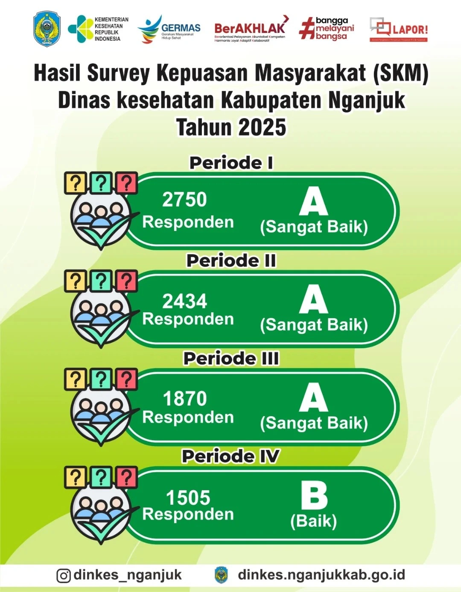
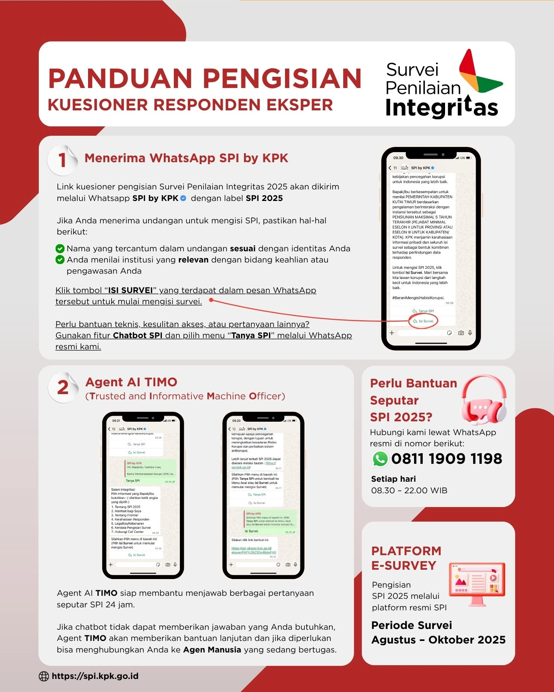
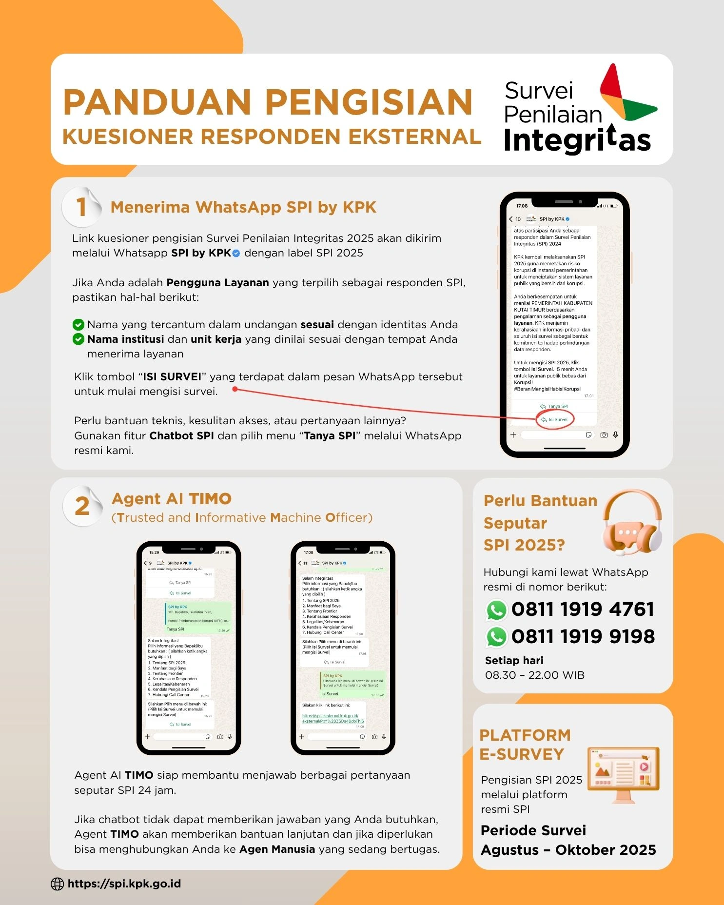
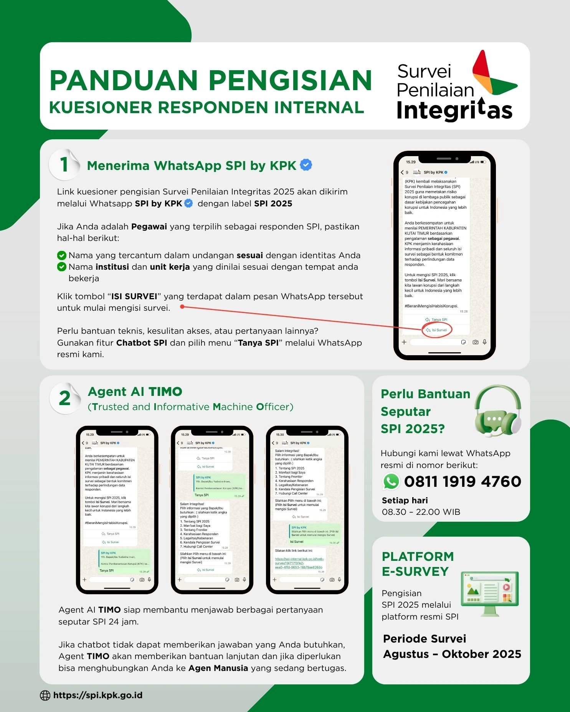

Mewujudkan Masyarakat Nganjuk yang Sehat, Mandiri, dan Berkeadilan. Akses informasi dan layanan kesehatan dengan mudah, cepat, dan transparan.
Temukan informasi yang Anda butuhkan dengan cepat
Daftar Puskesmas, Rumah Sakit, dan Klinik di Nganjuk.
Informasi dan data kesehatan masyarakat secara transparan.
Layanan aspirasi dan pengaduan masyarakat (SP4N LAPOR).
Update terbaru seputar kesehatan di Kabupaten Nganjuk

Dinas Kesehatan Nganjuk menggelar kegiatan sosialisasi gizi seimbang di beberapa posyandu...

Mendukung program nasional, seluruh puskesmas di Kabupaten Nganjuk menyelenggarakan...

Pemerintah Kabupaten Nganjuk meresmikan gedung baru untuk pelayanan rawat jalan...

Dalam rangka meningkatkan kesadaran masyarakat akan pentingnya kebersihan lingkungan...